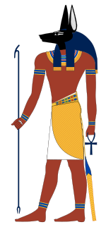

Anubis byl staroegyptský bůh, který hrál důležitou roli v péči o mrtvé a jejich posmrtný život. Jeho jméno je záhadné, ale často je spojován s představou strážce hrobek. V egyptské mytologii byl zobrazován buď jako černý pes nebo vlk ležící na břiše, nebo jako muž s vlčí hlavou. Černá barva symbolizovala znovuzrození a ochranu. Anubis byl považován za mistra mumifikace a kněží při balzamování často nosili jeho masku, aby ho uctili.
V mytologii vítal Anubis zesnulé v záhrobí a vedl je k bohovi Usirovi, kde se konal soud mrtvých. Při tomto soudu vážil srdce zesnulých proti pírku bohyně Maat, které symbolizovalo pravdu. Tímto způsobem rozhodoval, zda si duše zaslouží věčný život. Anubis byl také známý jako bůh naděje, protože mohl oživit mrtvé a zajistit jejich znovuzrození.